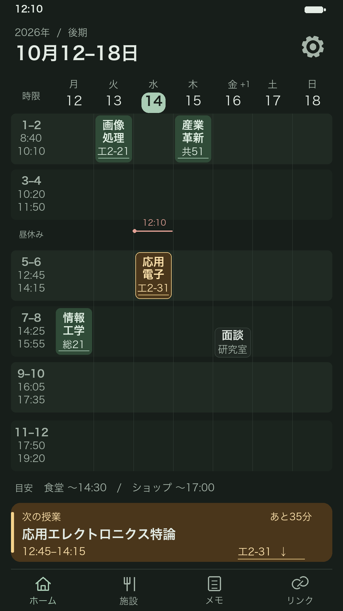
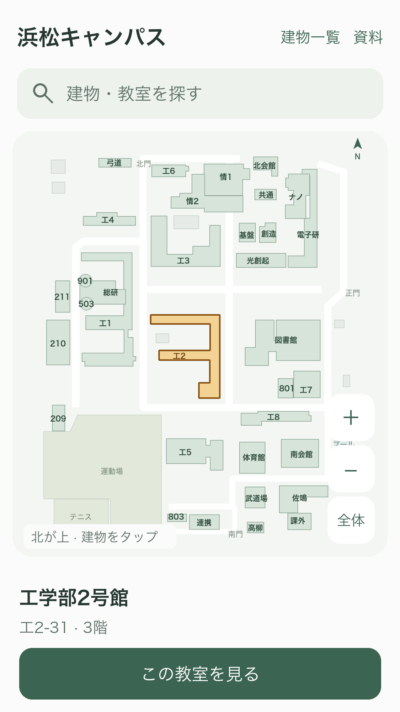
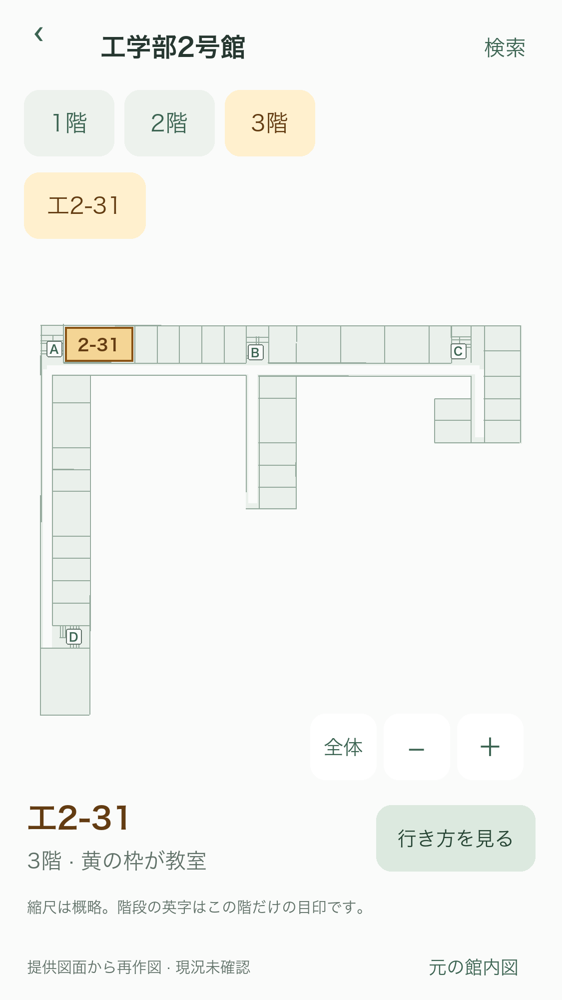
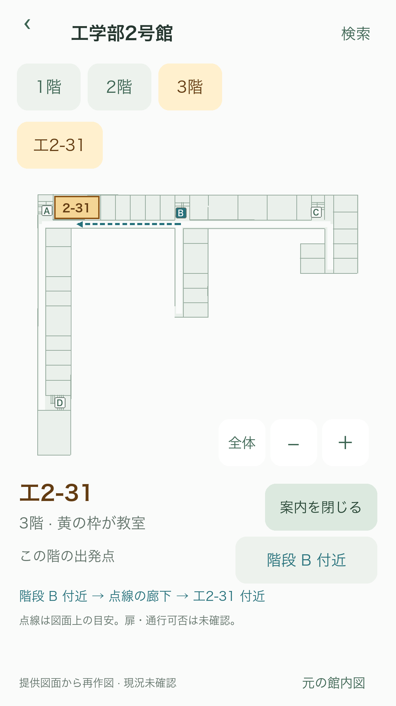

10月16日（金） · 全2件
◆ 研究の面談15:00–16:00 · 研究室授業コマと一致しない時刻も詳細に表示。
◆ 研究ミーティング20:00–21:00 · オンライン時間割の範囲外 · 架空の予定
ホームの「+1」から存在を確認。⚙ → 日別全件で日付を選び、正式名・実際の開始終了・場所を確認する。
仕様v11 · 画面案 / 未実装
館内の原図画像を拡大する見せ方から、キャンパスマップと共通の色で描き直した階全体の図へ更新。部屋・廊下・階段を見分け、選んだ教室を黄色で強調する。
館内全体と道順の操作見本を開く。「この教室を見る」→「行き方を見る」で、同じ階の階段付近から教室付近への参考線を重ねる。出発点は選択でき、現在地を示すものではない。図面上の接続を確認できない教室は全体図のみ表示する。
12棟・29枚の階別図、42教室を整理。資料の縮尺や扉位置、階段の階をまたぐ対応、現況・通行可否は保証せず、建物の入口からの連続ナビゲーションは作らない。原図は別画面から参照できる。
スマホの縦1列、週時間割、歯車への編集集約、既存S2–S5を維持。今回の成果物は画面案と操作見本。仕様・承認の正本はv11・pending。アプリ本体は変更していない。
次の授業に差し色を添え、場所を押すと下の地図で確認できる。

ホームの続き
提供資料から作成 · オフラインで表示


構内図：2026年4月1日現在。館内配置の最新確認は未実施。
館内図で工2-31を見る ↗緑の落ち着きは残し、次の授業と選択場所だけに琥珀色を使う。

時間の目盛りは毎時の数字から、授業の開始・終了へ変える。
短い名前と場所で枠を読み、実際の時刻は詳細で確認できる。
ホームの「+1」から存在を確認。⚙ → 日別全件で日付を選び、正式名・実際の開始終了・場所を確認する。
ホームでは予定と場所を確認し、追加・設定・修正は歯車へまとめる。
一覧は縦スクロール。保存済みの内容はここから変更。
現在の機能を残し、ホームからの入口を移す。
地図を大きく表示し、画面下のボタンから館内へ進む。

まず3階全体を見渡し、教室・廊下・階段の位置を把握する。

階段を出発点に選び、教室付近までを点線でたどる。

一度に1つの地図を見て、指で迷わず次へ進める。
1件
教室を選ぶと、その位置を表示します。
建物・教室・資料の版を分け、既存予定を変えずに場所へ結び付ける。
閲覧・メニュー・詳細・固定画像・未取込・文字拡大を切り替えて確認する。
日表示でも、元の予定と閲覧経路を保つ。
工2−31
6コマの軸を週と共通化。表示切替・日付変更は⚙へ。
月表示でも、元の予定と閲覧経路を保つ。
対象日と月の変更は⚙。画面は閲覧専用。
キャンパス・固定画像でも、元の予定と閲覧経路を保つ。
実資料の概略図。ホームの下からも閲覧できます。⚙ → キャンパスから開く。固定の管理は同パネルの管理メニューへ。
未取込でも、元の予定と閲覧経路を保つ。
ホームに追加・編集ボタンは置きません。
文字拡大でも、元の予定と閲覧経路を保つ。
応用エレクトロニクス特論
工2−31研究の面談
研究室文字拡大時は日別一覧。ホームは閲覧、操作は⚙。
表示を整理しても、元の予定と保存内容を保持する。
予定の配置は実時間、コマの背景と目盛りは授業時刻表から作る。
新しい同期方式・PDF形式・GPS経路案内は対象外。
従来の08–19時の範囲、枠内の開始終了、ホームからのメモ1操作、予定選択カード、施設帯の直接タップは本版で更新。その他のAC1–AC12は維持。
機能選択の未回答なし。U1大学Outlookの実機接続は未確認。U2地図資料の不足は今回の2PDFで解消。U3館内の最新配置は未確認。資料に掲載された範囲へ表示対象を限定する。足りない階は補完しない。U4屋外入口から各階への対応・正確な扉位置・現地での通行可否は未確認。同じ階の階段付近からの参考表示へ範囲を限定し、資料不足部分は案内線を出さない。
資料に基づく地図の作成依頼を受領。アプリ本体への組込み・仕様v11全体の実装承認は未受領。